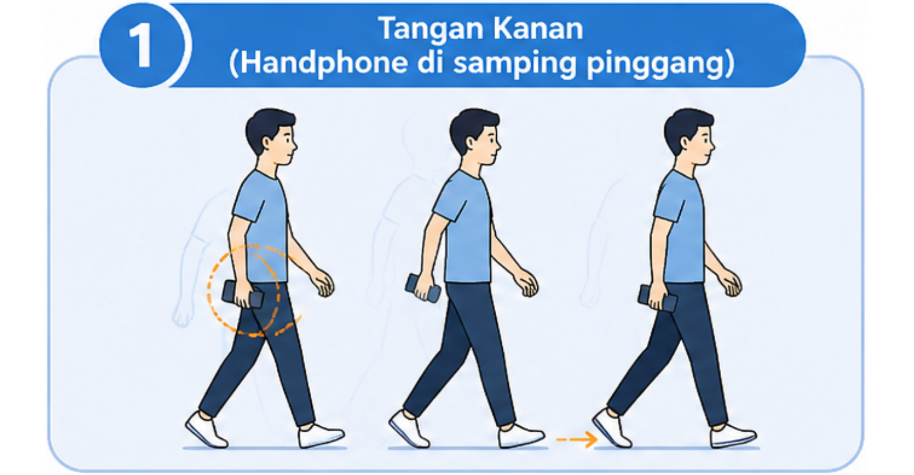

Nama saya Dave Tjong, mahasiswa Teknik Informatika Universitas Bina Nusantara (NIM: 2602077736). Saya sedang mengumpulkan data akselerometer dan giroskop untuk skripsi berjudul Explicit Gait Verification for Secure Authentication Using Explainable Federated Learning.
Dengan melanjutkan, Anda menyetujui pengumpulan dan penggunaan data sensor Anda secara anonim untuk tujuan penelitian akademis. Partisipasi bersifat sukarela dan Anda dapat menarik diri kapan saja.
Gait Data Collector
IMU Sensor Recorder
AutoP-0000
Progress Skenario1 / 5
1. TANGAN KANAN

Berjalan lurus secara natural dengan Handphone digenggam di tangan KANAN di samping pinggang.